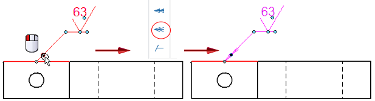

Change an annotation terminator
You can change the type of terminator displayed on a selected annotation, without having to edit its properties or modify the Dimension style.
-
Click the annotation to display its handles.
-
Click the terminator handle.
-
Choose a different terminator from the list.
The available terminator types are based on the type of annotation that you selected.
Example:Terminator Type=Double Arrow (Open)
